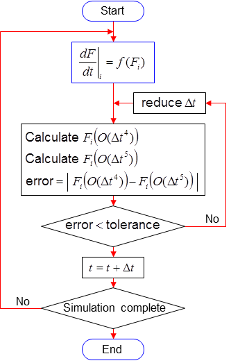

MATLAB Notes: Session 5 - MATLAB's ODE solvers
Simon Mathias
Department of Engineering
Durham University
Contents
Learning outcomes
At the end of the session you should be able to:
- Solve an ordinary differential equation using first-order explicit time -stepping.
- Re-cast the concept of first-order explicit time-stepping in terms of an ODE function.
- Describe how ode45 works.
- Solve an ordinary differntial equation using ode45.
Decay of Caesium-137 in a disposal lagoon
Consider a disposal lagoon containing water contaminated with Caesium-137. The half-life of Caesium-137 is about 30 years. The initial concentration of the Caesium in the lagoon water is 20 (ppb).
The rate of decay is described by following linear ordinary differential equation (ODE)

where 
![$[\mathrm{ML}^{-3}]$](MATLABsession5_eq03717337757153475401.png) is the Caesium-137 solute concentration,
is the Caesium-137 solute concentration, 
![$[\mathrm{T}]$](MATLABsession5_eq16979207896498719141.png) is time and
is time and 
![$[\mathrm{T}^{-1}]$](MATLABsession5_eq11652493192825170227.png) is the decay rate, found from
is the decay rate, found from  , and
, and  denotes the half-life.
denotes the half-life.
The associated initial condition takes the form  where
where  is the initial solute concentration.
is the initial solute concentration.
The following analytical solution to this problem can be obtained by separation of variables followed by direct integration:

In this exercise we will solve this problem using a first-order explicit time-stepping scheme and then using the MATLAB solver, ode45.
Solution by first-order explicit time-stepping
The simplest way to solve this problem is to use a first-order explicit time-stepping scheme.
First we will discrete the time, , into a sequence of time-steps of interval  . Let
. Let  denote the concentration at time,
denote the concentration at time,  . A discrete approximation of the ODE above can be written as follows
. A discrete approximation of the ODE above can be written as follows

which when solved for  takes the form
takes the form

Create a new script-file and type the following to evaluate and compare the first-order explicit solution and the associated analytical solution:
function MATLABsession5_Assignment %Solves the decay equation analytically, using Euler explicit time-stepping % % tHalf (years) - Half life of Caesium-137 % C0 (ppb) - Initial mass fraction of Caesium-137 % lambda (1/years) - Decay coefficient % t (years) - Time
%Define model parameters tHalf=30; C0=20; %Calculate decay coefficient lambda=log(2)/tHalf; %Define times of interest t=linspace(0,100,20)';
%Solve using first-order explicit time-stepping
%Define time-step dt=t(2)-t(1); %Initialize solution vector C=zeros(size(t)); %Set the initial condition C(1)=C0; %Step through explicit time-stepping sequence for n=1:numel(t)-1; C(n+1,1)=(1-dt*lambda)*C(n,1); end
%Evaluate an analytical solution for comparison purposes
Ca=C0*exp(-lambda*t);
%Plot results figure(1) plot(t,Ca,t,C,'o') xlabel('Time (years)') ylabel('Caesium-137 concentration (ppb)') legend('Analytical','First-order explicit')
Re-casting the problem in terms of an ODE function
A more general way to think about the explicit time-stepping scheme is to consider that

where in this case

Modify your existing code to better emphasise this idea.
This can be done by writing:
%Step through explicit time-stepping sequence for n=1:numel(t)-1; dCdt=-lambda*C(n,1); C(n+1,1)=dCdt*dt+C(n,1); end
Introducing the concept of an ODE solver
Now we are going to modify the code such that the explicit time-stepping takes place in a subfunction called MYsolver and the ordinary differential equation is contained within a subfunction called MYodefun.
function MATLABsession5_Assignment %Solves the decay equation analytically, using Euler explicit %time-stepping.
% tHalf (years) - Half life of Caesium-137 % C0 (ppb) - Initial mass fraction of Caesium-137 % lambda (1/years) - Decay coefficient % t (years) - Time
%Define model parameters
tHalf=30;
C0=20;
%Calculate decay coefficient
lambda=log(2)/tHalf;
%Define times of interest
t=linspace(0,100,20)';
%Solve using first-order explicit time-stepping
[t,C]=MYsolver(@MYodefun,t,C0,lambda);
%Evaluate an analytical solution for comparison purposes
Ca=C0*exp(-lambda*t);
%Plot results figure(1) plot(t,Ca,t,C,'o') xlabel('Time (years)') ylabel('Caesium-137 concentration (ppb)') legend('Analytical','First-order explicit')
%**************************************************************************
function dCdt=MYodefun(t,C,lambda) %The first-order decay equation dCdt=-lambda*C;
%**************************************************************************
function [t,f]=MYsolver(odefun,t,f0,p1) % odefun - contains the name of the subfunction containing the ODE function % t - a vector containing the times to be solved for. % f0 - initial condition of f % p1 - a parameter in the ODE % f - a vector containing the solution
%Initialize solution vector f=zeros(size(t)); %Set the initial condition f(1)=f0; %Step through explicit time-stepping sequence for n=1:numel(t)-1; %Obtain an estimate of the derivative using the ODE function dfdt=odefun(t(n,1),f(n,1),p1); %Define time-step dt=t(n+1)-t(n); %Evaluate y for the current time-step f(n+1,1)=dfdt*dt+f(n,1); end
The subfunction MYsolver is designed to solve an ODE, odefun, with initial condition, y0, by first-order explicit time-stepping. This command is useful if you do not already know the name of the function to be used. The function name is specified through function handle specified in odefun. All the subsequent parameters in the odefun input arguments are carried forward to the function specified by odefun, which in this case is MYodefun.
Note that in the main function the codes states that
[t,C]=MYsolver(@MYodefun,t,C0,lambda);
Where it says @MYodefun, we are telling MYsolver that odefun=@MYodefun.
The implications are that when we state
dfdt=odefun(t(n,1),f(n,1),p1);
MATLAB will interpret this as meaning
dfdt=MYodefun(t(n,1),f(n,1),p1);
If instead we said odefun=@simon, then MATLAB would intepret this as leading to
dfdt=simon(t(n,1),f(n,1),p1);
Read about the MATLAB help files about function handles to learn more about this.
With the code as stated, we can change which problem we are solving by applying a different ODE function. Similarly, we can change the way we are solving the differential equation by applying a different solver.
Application of MATLAB's ODE45
MATLAB has a number of different ODE solvers to choose from. ode45 represents the first ODE solver one might consider using.
Consider the following Taylor expansion for a function,  :
:

Solving for  it can be seen that
it can be seen that

which is the basic finite difference approximation for a derivative we used previously for our first-order time-stepping scheme.
From the Taylor series it is clear that the truncation error associated with this approximation is of the order of . Consequently, this approximation is often referred to as being first-order accurate.
By manipulating the Taylor series it is possible derive increasingly more accurate approximations of the first-order derivative. There are many differnt methodologies to achieve this. A particularly popular method is the so-called Runge-Kutta method.
MATLAB's solver, ode45, has an adaptive time stepping routine. The solver repeats its calculations with successively smaller time-steps until the error between two results, generated using Runge-Kutta 4th (which is 4th order accurate) and Runge-Kutta 5th (which is 5th order accurate) methods, is below a pre-defined error tolerance; hence the name ode45. This process is illustrated further in the flowchart below.

The advantage of such an approach is that the solver is able to take much larger time-steps when not much activity is happening, whilst maintaing the same accuracy throughout the simulation. As a result, ode45 is able to compute solutions much faster than conventional first-order explicit time-stepping schemes without compromising accuracy.
Read the help file about ode45. Now modify your MATLABsession5_Assignment script such that the decay problem, discussed earlier, is also solved using ode45. This can be done by adding the following code:
%Solve using ODE45
options=[];
[t,Code45]=ode45(@MYodefun,t,C0,options,lambda);
Note that in the above example we are not changing any of the available options associated with ode45. You can learn more about the options available by studying the help file for odeset.
Use a plot to compare your results with the first-order explicit solution and the analytical solution.
Also note that the t vector simply contains the time we require solution values at. The times in the t vector have nothing to do with the actual time-steps that are used. See what happens if you set
t=[0 50 100]';
An example MATLAB code, containing all of the instructions requested above, is given in MATLABsession5_Assignment.m.